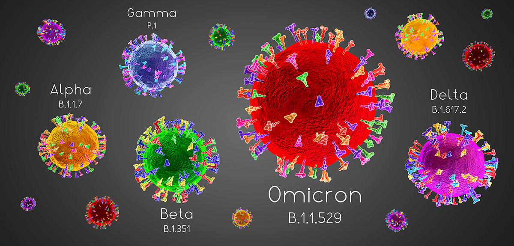
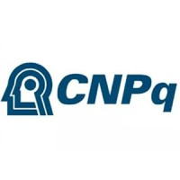
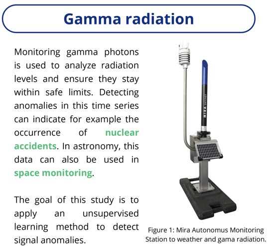
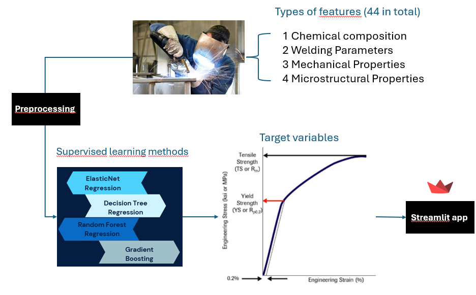
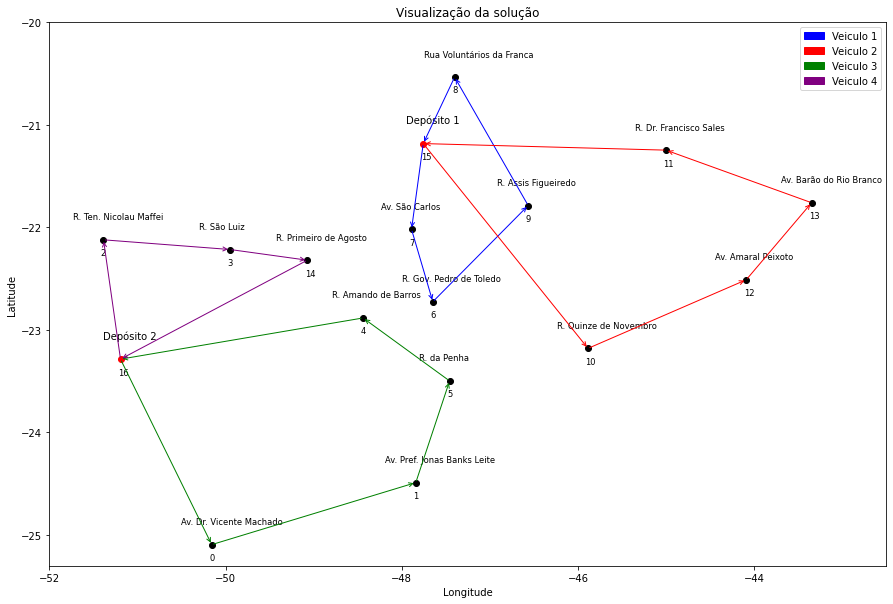
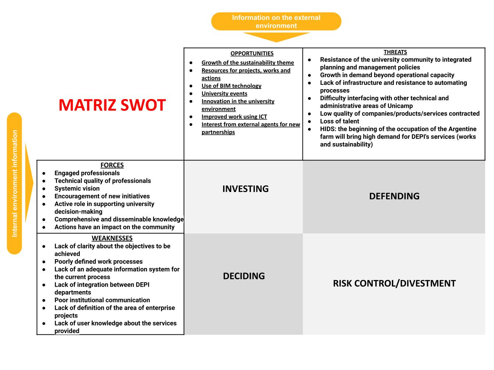
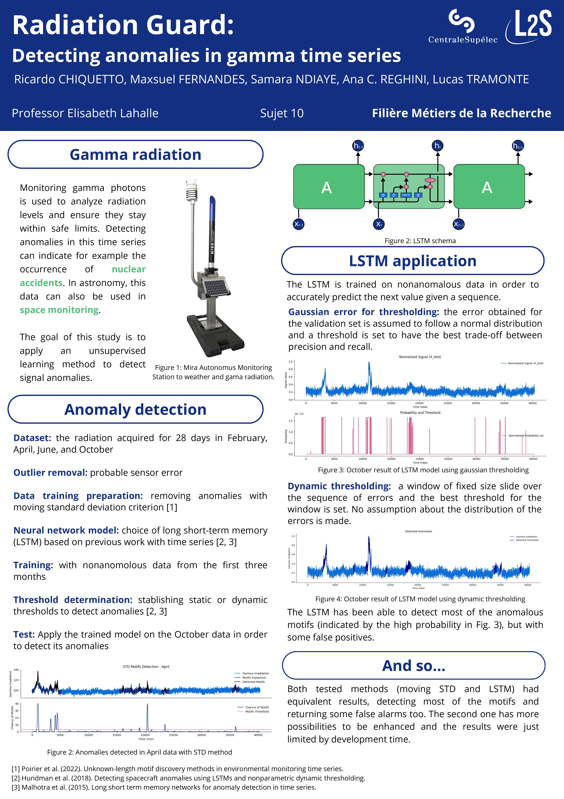

SARS-CoV-2 Maternal Impact

Engineering student at CentraleSupélec, France. Final year specialization in Artificial Intelligence.
I have experience in data science and analytics, including descriptive statistics, supervised and unsupervised machine learning models, as well as knowledge of tools and languages such as SQL, Python, C/C++, and Power BI. I enjoy applying these skills to solve problems and work with data-driven solutions.
FlexSim
Data Scientist Intern - -
Eldorado Institute
Data Scientist Intern - -

Council for Scientific and Technological Development - CNPq
Undergraduate research fellow - -
Ecole CentraleSupélec, Université Paris-Saclay
M.S, Engineering Degree (M2) - -
State University of Campinas - UNICAMP
B.S, Industrial Engineering - -
SARS-CoV-2 Maternal Impact

Radiological-pollution-monitoring-anomaly-detection

Welding-Quality-Prediction

MDVRP-Magazine-Luiza

Optimization-AirFrance
Prediction of the SWOT analysis

SARS-CoV-2 Maternal Impact
Implemented data processing and statistical analysis of scientific research on the impact of different SARS-CoV-2 variants on maternal outcomes in Brazil, using Python and Power BI By leveraging publicly available data, the study examines how different variants—Gamma, Delta, and Omicron—have impacted pregnant and postpartum women in terms of severe outcomes like ICU admission and mortality. This project was accepted for publication at the FIGO Obstetrics & Gynaecology International Conference
Radiological-pollution-monitoring-anomaly-detection

Developed an anomaly detection system for radiological pollution monitoring using gamma photon counting sensors. Applied unsupervised learning methods, including LSTM models, to detect anomalies in time series data
Welding-Quality-Prediction
MDVRP-Magazine-Luiza
Optimization-AirFrance
Prediction of the SWOT analysis